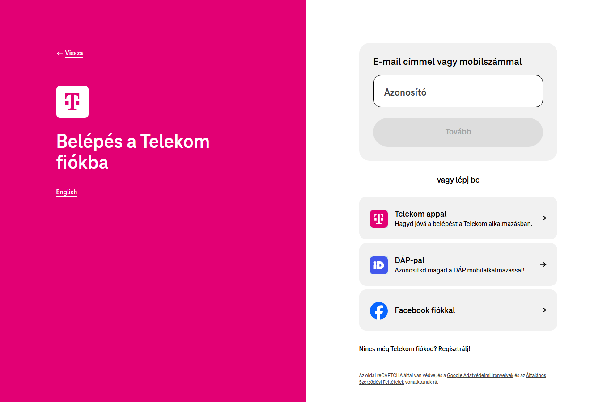

يستمع
الهاتف على مكبّر الصوت بجانب الحاسوب
وصف المشروع. حارس للمكالمات ورادار استباقي للروابط والمواقع والإعلانات وقوائم خرائط Google المزيفة التي تستهدف سكان الإمارات.
كل رابط مزيف وكل إعلان مزيف وكل رقم خدمة عملاء مزيف ينتهي بالطريقة نفسها: مكالمة هاتفية تطلب رمز التحقق أو بيانات البطاقة أو تحويلاً مالياً. عند مكالمة مشبوهة، يضع المستخدم الهاتف على مكبّر الصوت بجانب الحاسوب ويضغط استمع. يسمع راصد الطرفين، ويبقى صامتاً ما دامت المكالمة عادية، ثم يحذّر بصوت عالٍ بالعربية والإنجليزية في اللحظة التي يبدأ فيها سيناريو الاحتيال، فيسمع المحتال التحذير أيضاً. وبضغطة أخرى تُرفع المكالمة كقضية في منصة الشرطة.

الهاتف على مكبّر الصوت بجانب الحاسوب
تحويل الكلام إلى نص، عربي أو إنجليزي
10 عائلات قواعد فورية بدون إنترنت، و Claude اختياري
50 فأكثر تنبيه، 80 فأكثر تحذير، بصوت عربي وإنجليزي
ضغطة واحدة تفتح قضية للشرطة
رموز OTP والتحقق · رقم البطاقة و CVV و PIN · الهوية الإماراتية والجواز · التحويلات وبطاقات الهدايا · AnyDesk والتحكم عن بُعد · السرّية والضغط · التهديد بالسجن أو المخالفات · جوائز مقابل رسوم · روابط عبر SMS · انتحال صفة بنك أو شرطة أو جهة حكومية. عبارات الطمأنة مثل «لن نطلب منك الرقم السري أبداً» لا تُحتسب.
| اختُبر على 5 مكالمات تجريبية · 5 من 5 صحيحة | الخطر |
|---|---|
| بنك مزيف يطلب رمز OTP (عربي) | 100 |
| مخالفة شرطة مزيفة + AnyDesk (إنجليزي) | 100 |
| رابط طرد عبر SMS (إنجليزي) | 50 |
| تذكير حقيقي من البنك (إنجليزي) | 10 |
| صديق، مكالمة عادية (عربي) | 0 |
بدون تطبيق، بدون رقم هاتف، بدون خدمة صوتية مدفوعة: المتصفح يتولى الاستماع والنطق. لا يُسجَّل أي صوت ولا يُحفظ أي نص، فقط الحكم والمؤشرات للمكالمة التي يُبلَّغ عنها. بدون مفتاح Claude تعمل القواعد وحدها بدون إنترنت.
2مواقع الاحتيال في الإمارات تقلّد البنوك و TAMM و UAE PASS ودفع المخالفات المرورية وشركات الشحن والفعاليات (الفورمولا 1، اليوم الوطني، الحج والعمرة) ووكالات التوظيف. وتصل إلى الناس عبر نطاقات جديدة متشابهة، وإعلانات مدفوعة، ونتائج بحث Google، وقوائم مزيفة على خرائط Google بأرقام خدمة عملاء وهمية، ومنشورات بلغات العمالة الوافدة. معظم الأدوات لا تتحرك إلا بعد أن يلصق الضحية الرابط أو يقدّم بلاغاً، وحينها يكون المال قد ذهب والموقع قد انتقل إلى نطاق جديد.
adcb-secure-verify.top
أخطاء إملائية وحروف سيريلية وكلمات إغراء. تُسجَّل اليوم وتختفي الأسبوع القادم.
"Customer Care 24/7"
إعلانات وقوائم خرائط تحمل اسم علامة تجارية، برقم جوال المحتال.
«اقرأ لي رمز التحقق»
إعلانات وظائف وتأشيرات بالأردية والمالايالامية والتاغالوغية، ثم المكالمة التي تُتمّ الاحتيال.
يكتب الضابط اسم علامة تجارية أو خدمة حكومية أو فعالية، فيشغّل راصد حلقة الصيد ويعيد قائمة مرتبة بالمواقع المزيفة الحية، لكل منها أدلته. يقرأ راصد نحو 70,000 نطاق جديد كل يوم.
أخطاء إملائية، حروف متشابهة، تبديل الامتداد
النطاقات الجديدة، الشهادات، الإعلانات، البحث، الخرائط، Telegram
يفتح كل موقع مشبوه في متصفحه ويلتقط صورة
من 0 إلى 100 مع كل سبب
نفس الأيقونة أو البوت أو الرقم يعني جهة واحدة
ملف أدلة ورسائل بلاغ يراجعها الضابط


الميزة الرئيسية. يستمع إلى المكالمة ويحذّر بصوت عالٍ بالعربية والإنجليزية.
أي رابط: يتتبّع التحويلات والروابط المختصرة، يفتح الصفحة ويقيّمها.
يولّد النطاقات التي قد يشتريها المحتال ويتحقق منها لكل قائمة مراقبة.
النطاقات المسجّلة يومياً وسجلات Certificate Transparency.
قوائم Google Places تُقارن بالنطاقات والأرقام الرسمية في كل إمارة.
مكتبة إعلانات Meta، شفافية إعلانات Google، ونتائج البحث في الإمارات.
يجمع المواقع المصنّفة في شبكات احتيال عبر البصمات المشتركة.
11 لغة، منها العربية والأردية والمالايالامية والتاغالوغية والسنهالية والنيبالية.
اختبار ميداني، 24 نوفمبر 2026. الأرقام كما قيست.
مكالمات تجريبية حكم عليها حارس المكالمات بدقة: الاحتيال وصل إلى 100، رابط الطرد 50، والعادية بين 0 و 10.
مواقع حقيقية بقيت نظيفة: ADCB، TAMM، شرطة أبوظبي، الإمارات دبي الوطني، u.ae، Instagram، Netflix، PayPal، دخول Microsoft.
روابط احتيال حية من قائمة عامة كُشفت كاحتيال، بعد أن كانت 0 قبل الفحوص المستقلة عن العلامة. معظم البقية كانت مغلقة أصلاً.
كل تصنيف يحمل درجته وسبب كل نقطة فيها. يكتب Claude ملاحظة القضية بالعربية والإنجليزية. وحزمة الإزالة تجمع اللقطات و RDAP/WHOIS و DNS وموقع الاستضافة والأوقات والأسباب، مع رسائل بلاغ جاهزة لمسجّل النطاق والمستضيف، بصيغة JSON أو HTML للطباعة.
لا شيء يُرسل تلقائياً: الرسائل مسودات يراجعها الضابط ويوافق عليها.

ضبطية حية، 24 نوفمبر 2026. من قائمة احتيال عامة، تتبّع راصد الرابط وفتحه في متصفحه الخاص وأعطاه 60، أي احتيال: 30 لصفحة دخول Telekom على نطاق لا تملكه، و 20 لادعاء اسم Telekom على net.pl، و 10 للإخفاء، إذ يرى Googlebot والجوال صفحتين مختلفتين.

| 30% | دقة الكشف | حارس المكالمات: 5 من 5 مكالمات صحيحة، والطمأنة لا تُحتسب. الروابط: بوابة المحتوى وتتبّع الإخفاء وفحوص مستقلة عن العلامة؛ و POST /api/check يقيّم مجموعة اختبار كاملة في طلب واحد. |
| 25% | الكشف المبكر والتغطية | يحذّر أثناء المكالمة قبل تحويل المال؛ نطاقات جديدة، سجلات الشهادات، نطاقات متشابهة مولّدة، إعلانات، بحث، خرائط، Telegram. |
| 20% | قابلية التفسير والتنفيذ | التحذير المنطوق يشرح السبب؛ مؤشرات لكل مكالمة؛ أسباب لكل نقطة، لقطات، WHOIS، استضافة، حزمة إزالة، ملاحظات بالعربية والإنجليزية. |
| 15% | الملاءمة للإمارات والابتكار | مستمع مكالمات عربي وإنجليزي بلا تطبيق أو رقم؛ بنوك الإمارات، TAMM، UAE PASS، المخالفات والفعاليات؛ 11 لغة؛ شبكات الجهات. |
| 10% | الجدوى والعرض | يعمل مباشرة على rasid-scam-radar.onrender.com وعلى حاسوب واحد بلا مفاتيح؛ الحدود موثّقة بصدق. |
git clone https://github.com/OmerWasyhun/rasid-scam-radar.git cd rasid-scam-radar python -m venv .venv .venv\Scripts\pip install -r requirements.txt .venv\Scripts\python -m playwright install chromium copy .env.example .env .venv\Scripts\python -m uvicorn rasid.api:app --port 8042
افتح http://localhost:8042. كل مفاتيح API اختيارية.
الشهر 1: حارس المكالمات على حواسيب الشرطة ومراكز اتصال البنوك ولكبار السن؛ ورادار الروابط يراقب أكثر العلامات المنتحَلة في الإمارات. الشهر 2: الحارس كتطبيق هاتف؛ بلاغات أمان ونطاقات .ae من TDRA كمصادر؛ قنوات إغلاق المواقع. الشهر 3 وما بعده: PostgreSQL ومستشعرات مجدولة على عدة خوادم.
صفحات الاحتيال التي تختبئ خلف ملف تعريف ارتباط أو فحص دولة قد تبدو نظيفة؛ الباقات المجانية للخدمات الخارجية محدودة؛ لا توجد قائمة عامة بنطاقات الإمارات الجديدة؛ التعرف على الكلام يحتاج إلى إنترنت ويتعثّر مع المكالمات المليئة بالضوضاء.
السلامة والخصوصية: تُزار الصفحات المشبوهة للقراءة فقط: لا تُرسل أي نماذج، وتُرفض العناوين الخاصة والداخلية. حارس المكالمات يعمل في متصفح المستخدم ولا يسجّل أي صوت. المفاتيح تبقى في ملف .env الذي يتجاهله git. إعلانات الوظائف والمكالمات التجريبية ونسخة التصيّد عيّنات من إعدادنا ومعلَّمة كعيّنات.
6